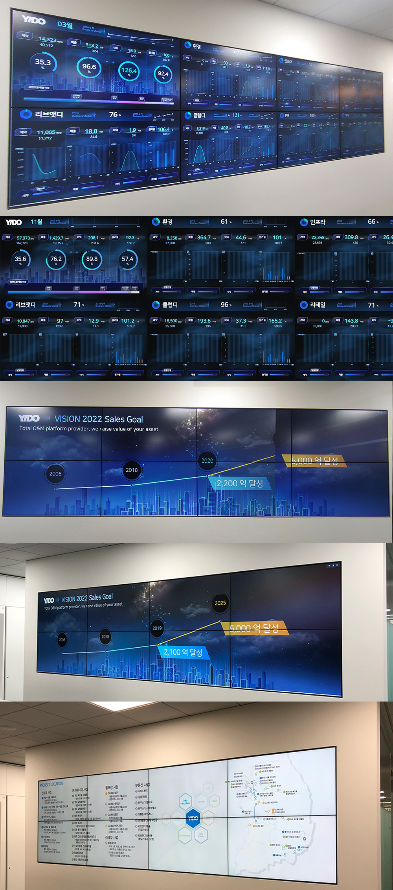

데이터 시각화
Dashboard UI
복잡한 데이터를 직관적으로 파악할 수 있는 대시보드 UI 설계. 사용자가 필요한 정보를 빠르게 탐색하고 의사결정을 내릴 수 있도록 데이터 시각화 경험을 최적화했습니다.
대시보드
데이터 시각화
Figma

01 — 화면 설계
데이터 중심의 인터페이스
방대한 데이터를 한눈에 파악할 수 있도록 정보 계층을 정리하고, 차트와 지표를 효과적으로 배치하여 업무 효율을 높이는 대시보드를 설계했습니다.

